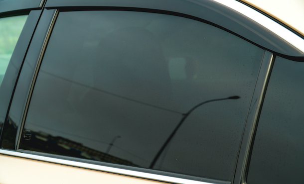

L'applicazione professionale di pellicole per vetri garantisce molteplici benefici: dalla protezione solare alla privacy, toccando anche la sfera della sicurezza e protezione personale. Non ultimo l'aspetto estetico, che ognuno può adattare al proprio stile grazie ad un ampio catalogo di pellicole, tutte omologate e conformi alla vigente legislazione italiana, permettendo la più ampia scelta disponibile in questo settore. Le pellicole professionali da noi utilizzate non sono in vendita nei negozi ma si trovano solo nei migliori centri di installazione specializzati.
L'applicazione di una pellicola oscurante ai vetri all'auto offre molti vantaggi.
Gli occupanti viaggeranno in modo più confortevole, grazie alle pellicole adesive anti-UV.
La macchina sarà trendy all'esterno e fresca all'interno.
Il viaggio sarà più piacevole, grazie alla protezione solare per auto.
L'oscuramento dei vetri dell'auto ti offre privacy e protezione.
Una volta scelta la pellicola ci occuperemo di tutto il lavoro noi e tu non ti dovrai preoccupare di nulla. Il processo di oscuramento vetri inizia con la pulizia di tutti i vetri che si devono oscurare.
Prendiamo la forma di ogni singolo vetro, tagliando e sagomando le pellicole tutto a mano con cutter e lame professionali che non graffiano i vetri, in rari casi prendiamo il segno con un pennarello. I vetri che presentano bombature necessitano termoformazione, ciò significa dare alla pellicola la stessa bombatura del vetro i più complicati sono i lunotti ovviamente.
Non smontiamo i pannelli, li allarghiamo con attrezzi professionali solo nella parte superiore per estrarre il rasavetro interno, sono poche le auto dove vanno smontati del tutto. Inoltre i pannelli vengono sempre protetti dal liquido di applicazione con un celofan per evitare eventuali reazioni chimiche tra i vari materiali. Non tagliamo mai sulle guarnizioni di gomma cosi da evitare danni ai veicoli.
La durata dell' intervento varia in base alla tipologia e al modello auto, ma la lavorazione completa non supera l'arco delle 2/4 ore. Possiamo oscurare solo la parte posteriore della vostra auto, ad esclusione del parabrezza, lato conducente e passeggero anteriore, poiché per legge l'auto non deve essere modificata in modo tale da compromettere la visuale del conducente che deve essere di 180° (parabrezza e finestrini laterali).
In media, il costo per un rotolo o i fogli necessari per l’oscuramento di tutti i vetri posteriori del veicolo varia da 50,00 a 100,00 euro, a seconda della tipologia scelta, con l’aggiunta della manodopera necessaria per il montaggio; in un centro specializzato il costo totale potrà essere tra i 200 e i 250 euro.